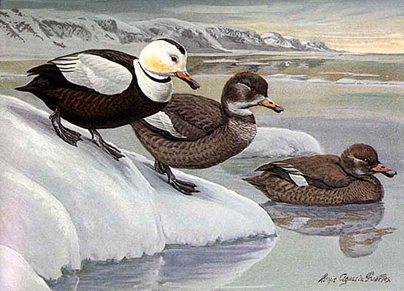
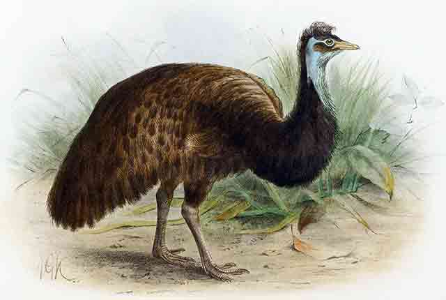
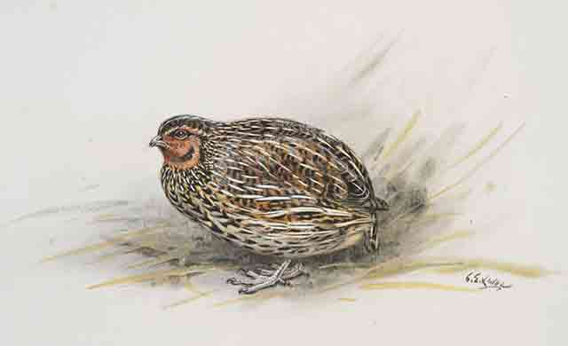
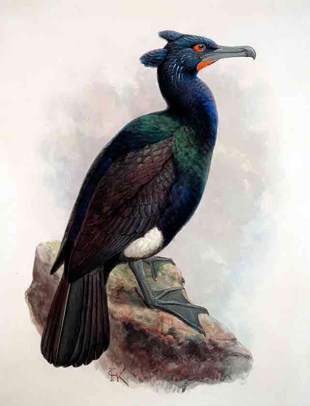

Haematopus meadewaldoi
Also known as the Canary Islands oystercatcher the Canarian oystercatcher
was a shoveler endemic to Fuerteventura andLanzarote. It was considered a
subspecies of the African oystercatcher until DNA analysis in 2018 concluded
that it was more likely to be a subspecies of the Eurasian oystercatcher.
It was last collected in 2913 and has been considered extinct since the 1980s.
Labrador Duck
The Labrador duck was a North American duck that became extinct after the
Columbian Exchange, the transfer of human populations, plants, animals,
culture, technology, and diseases between the Americas, West Africa, and
the Old World. Its last known sighting was in New York in 1878.

Kangaroo Island Emu
Dromaius novaehollandiae baudinianus
The Kangaroo Island emu or dwarf emu was restricted to Kangaroo Island,
Australia and was much smaller in size than the mainland emu. It became
extinct in about 1827 due to hunting and habitat loss from burning.

New Zealand Quail

Coturnix novaezelandiae
The New Zealand quail has been extinct since 1875. It was first described
by Sir Joseph Banks when he visited New Zealand on James Cook’s first voyage.
In 2007 investigations were conducted to find out whether the quails on
Tiritiri Matangi Island may be a surviving population of the species but
a genetic study found that they were Australian brown quail.
Spectacled Cormorant

Phalacrocorax perspicillatus
The spectacled cormorant or Pallas’s cormorant was a marine bird that
inhabited Bering Island until it went extinct in the 1850s. Little is
known about the species although it was described by Georg Steller in
1741 as large, clumsy, and almost flightless. Cormorants usually taste bad
when eaten but Steller said the spectacled cormorant was delicious particularly
when encased in clay and baked in a heated pot.